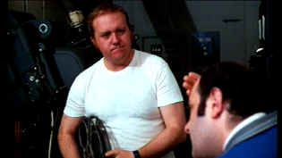

| Projectionist, The/ C+, C+ |
| Image/1971/85/ANA 1.85 |
Under the surface of The Projectionist
is another movie that fails to come out. The title character, Chuck the
projectionist, is a strange loner, a man finding fulfillment through his
fantastic day dreams; but there's also a lonely man, finding solace from
everyday boredom in those same dreams. The film only provides a hint of
the complexity of Chuck. Instead, the chief focus is on Chuck's day
dreams, a running black and white silent movie adventure in which he dons
the ill-fitting uniform of Captain Flash, a superhero battling The Bat to
preserve truth, freedom, and the American way.
 |
|
Chuck's world. ©Image
|
The powerful opening mixes fantasy, mechanics of the
projection room, humor, and the stark isolation of the projectionist. The
balance between Chuck's real life and the silent film fantasy is loaded
far too much in favor of the later. The silent film material is often
funny, but it's repetitious, somewhat life seeing the rehash of a action
serial before each chapter is presented. The integration with classic film
clips is done very well using scenes featuring Bogart, Flynn, Cooper,
Chaplin and even a moment of Mickey Rooney as Puck.
The picture of 42nd Street in the late sixties presents
a stark contrast to the Disneyfied street that exists today. It's Chuck's
domain, lined with movie marquees, porno shops, the long past Automat
serving up sandwiches through window compartments, and an assortment of
seedy street figures. The classic movie posters displayed on the walls of
Chuck's apartment could probably finance a small movie production today.
Chuck McCann, the former children's' television
performer, is very fine as Chuck. He has all the silent movie moves down
pat, and there is a person hibernating under that bearish exterior.
There's one scene where Chuck McCann does a fabulous medley of actor
imitations to the star pictures on the projection room wall. The flow from
star to star is quite brilliant. Rodney Dangerfield is a nasty theater
manager and Ina Balin romps around effectively enough as the silent femme
fatale.
The source material is quite grainy and often
explosions of white specs disturbing the image. Billed as "Preserved
by The Museum of Modern Art," it does not appear that the statement
infers any restoration work was done. There are also instances of element
distortion for brief moments. The color is okay, only slightly pale. The
black and white fantasy sequences stand up the best to time. Black levels
are good and shadow detail is just fine. The image is reasonably sharp
most of the time and the New York City night sequences have a gritty
documentary feel. |
|
|
|

 Gary Morris's insightful publication
Bright Lights Film Journal turns the celluloid in films from a unique
perspective. Click on the image above for more pure movie views. Gary Morris's insightful publication
Bright Lights Film Journal turns the celluloid in films from a unique
perspective. Click on the image above for more pure movie views.

Home to The American Society of Cinematographers.
Includes features from American Cinematographer Magazine and more...

Excellent resource for movie review links, with many early looks.

Selections from the Feature
Archive include articles on Akira Kurosawa, Blonde Bimbos, Frank Darabont, Steven Culp, John Herzfeld or Vietnam: The Hollywood Pariah, and many
more....
Thorough a Lens, Obliquely

Flicks about Hollywood make fascinating material, but the establishment
isn't always totally forthcoming. Click on the Hollywood montage for a
look at some of the best Hollywood films about the movie-making business

The Movie Poster
Archive includes extensive poster images from the films of stars like
Susan Hayward, Kirk Douglas, Katharine Hepburn and many more. Our
featured star is Lana Turner. |